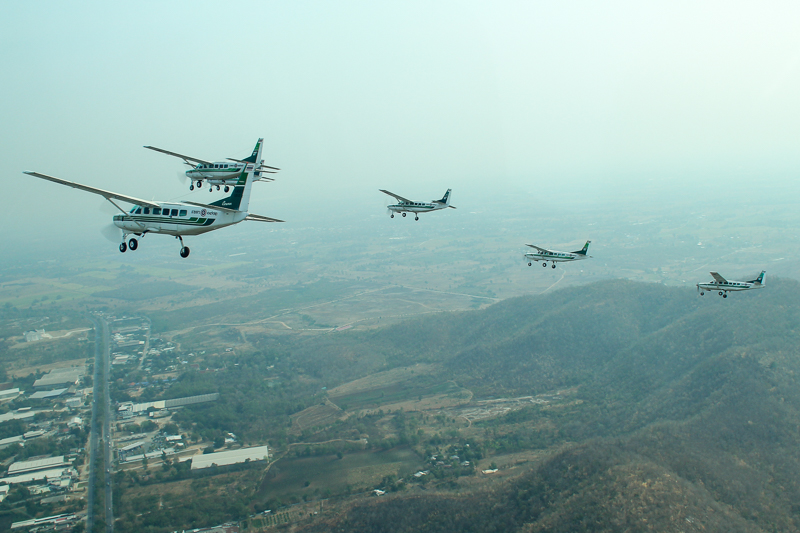
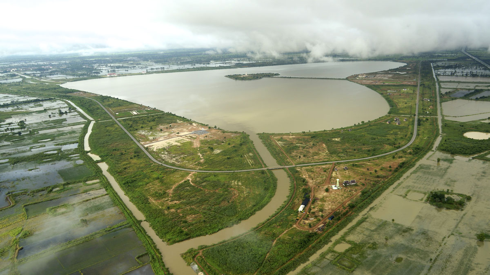
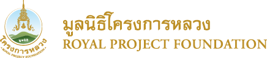
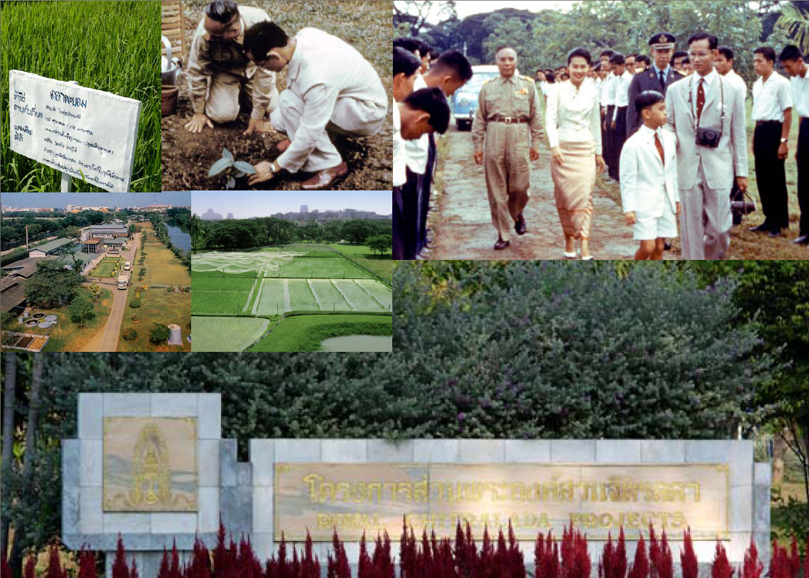
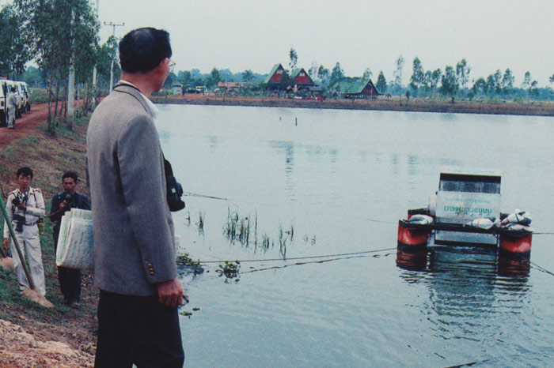

"พระบาทสมเด็จพระเจ้าอยู่หัวในบรมโกศ
ทรงพัฒนาชนบทในรูปโครงการอันเนื่องมาจากพระราชดำริ
ซึ่งมีจำนวนมากกว่า 4,000 โครงการทั่วประเทศ
เพื่อให้ราษฎรในชนบทได้มีความเป็นอยู่ที่ดี
ตลอดจนสามารถประกอบอาชีพเลี้ยงครอบครัวให้ดีขึ้น
สามารถพึ่งตนเองได้
ทรงส่งเสริมให้ชาวชนบทมีความรู้ในการประกอบอาชีพตามแต่ละท้องถิ่น"
โครงการฝนหลวง

เมื่อคราวที่พระบาทสมเด็จพระเจ้าอยู่หัวภูมิพลอดุลยเดช เสด็จพระราชดำเนินเยี่ยมพสกนิกร เมื่อปี พ.ศ. 2498 ในภาคตะวันออกเฉียงเหนือ ได้ทรงรับทราบถึงความเดือดร้อนทุกข์ยากของราษฎรและเกษตรกรที่ขาดแคลนน้ำอุปโภคบริโภคและการเกษตร จึงได้มีพระมหากรุณาธิคุณพระราชทานโครงการพระราชดำริ "ฝนหลวง"(Artificial rain) ให้กับ ม.ร.ว.เทพฤทธิ์ เทวกุล ไปดำเนินการ ซึ่งต่อมาได้เกิดเป็นโครงการค้นคว้าทดลองปฏิบัติการฝนเทียมหรือฝนหลวงขึ้น ในสังกัดสำนักงานปลัดกระทรวงเกษตรและสหกรณ์ เมื่อปี พ.ศ. 2512
เพื่อแก้ปัญหาเดือดร้อนทุกข์ยากของราษฎรและเกษตรกรที่ขาดแคลนน้ำอุปโภคบริโภคและการเกษตร
วีดีโอแนะนำโครงการฝนหลวง
โครงการแก้มลิง

โครงการแก้มลิง เป็นการบริหารจัดการน้ำตามแนวพระราชดำริของพระบาทสมเด็จพระปรมินทรมหาภูมิพลอดุลยเดช เกี่ยวกับพื้นที่หน่วงน้ำ (detention basin) เพื่อแก้ปัญหาน้ำท่วมหลังเกิดอุทกภัยในประเทศไทย พ.ศ. 2538 ปัจจุบันมีพื้นที่แก้มลิงขนาดใหญ่อยู่ทางฝั่งตะวันออกของกรุงเทพ เหนือท่าอากาศยานสุวรรณภูมิ โดยกำหนดในผังการใช้ที่ดินเป็นพื้นที่เขียวลาย ไม่เหมาะกับการพัฒนา นอกจากนี้ยังมีแก้มลิงเล็กใหญ่กระจายอยู่ทั่ว กรุงเทพ กว่า 20 จุด
โครงการแก้มลิง มีแนวคิดจากการที่ลิงอมกล้วยไว้ในกระพุ้งแก้มไว้ได้คราวละมาก ๆ พระบาทสมเด็จพระปรมินทรมหาภูมิพลอดุลยเดชได้มีพระราชกระแสอธิบายว่า "ลิงโดยทั่วไปถ้าเราส่งกล้วยให้ ลิงจะรีบปอกเปลือก เอาเข้าปากเคี้ยว แล้วนำไปเก็บไว้ที่แก้มก่อนลิงจะทำอย่างนี้จนกล้วยหมดหวีหรือ เต็มกระพุ้งแก้ม จากนั้นจะค่อย ๆ นำออกมาเคี้ยวและกลืนกินภายหลัง"
ในโครงการ มีการวางแผนพื้นที่แก้มลิงอย่างเป็นระบบ โดยหน่วยงานต่าง ๆ เช่น กทม. กรมชลประทาน เป็นต้น แก้มลิงมี 3 ขนาด จากใหญ่ กลาง เล็ก มีวัตถุประสงค์เพื่อการชะลอน้ำก่อนที่จะจัดการระบายออกในเวลาต่อมา
วีดีโอแนะนำโครงการแก้มลิง
มูลนิธิโครงการหลวง

มูลนิธิโครงการหลวงเป็นโครงการส่วนพระองค์ในพระบาทสมเด็จพระปรมินทรมหาภูมิพลอดุลยเดช ในการส่งเสริมการปลูกพืชเมืองหนาวแก่ชาวเขา เพื่อเป็นการหารายได้ทดแทนการปลูกฝิ่น ก่อตั้งเมื่อ พ.ศ. 2512 โดยหม่อมเจ้าภีศเดช รัชนี เป็นผู้รับผิดชอบในฐานะประธานมูลนิธิโครงการหลวง
ในระยะแรก เป็นโครงการอาสาสมัคร โดยมีอาสาสมัคร จากมหาวิทยาลัยเกษตรศาสตร์ มหาวิทยาลัยเชียงใหม่ สถาบันเทคโนโลยีการเกษตรแม่โจ้ กรมวิชาการเกษตร กรมปศุสัตว์ และกองทัพอากาศ ปัจจุบันโครงการหลวง ดำเนินงานใน 8 จังหวัดภาคเหนือ คือ เชียงใหม่ เชียงราย ลำพูน ลำปาง แพร่ น่าน พะเยา และแม่ฮ่องสอน มีสถานีวิจัยหลัก 4 สถานี และสถานีส่งเสริมปลูกพืชทดแทนฝิ่น เรียกว่า ศูนย์พัฒนาโครงการ จำนวน 21 ศูนย์ และหมู่บ้านพัฒนาอีก 6 หมู่บ้าน รวมหมู่บ้านในเขตปฏิบัติการทั้งสิ้น 267 หมู่บ้าน
ผลผลิตจากโครงการหลวงในปัจจุบัน ประกอบด้วย
ผักปลอดภัยสารพิษ สมุนไพร ถั่วและธัญพืช ผลไม้
เห็ด ดอกไม้เมืองหนาว ผลิตผลปศุสัตว ผลิตผลประมง
ผลิตผลป่าไม้ ดอกไม้แห้ง ผลิตภัณฑ์จากแฝก ไม้กระถาง
ผลิตภัณฑ์แปรรูปในชื่อการค้า โครงการหลวง และดอยคำ
วีดีโอแนะนำมูลนิธิโครงการหลวง
>เข้าสู่เว็บไซต์มูลนิธิโครงการหลวง<
โครงการส่วนพระองค์สวนจิตรลดา

โครงการส่วนพระองค์สวนจิตรลดา เป็นโครงการที่พระบาทสมเด็จพระเจ้าอยู่หัวได้ทรงริเริ่มดำเนินการทดลองการแปรรูปผลิตผลการเกษตรขึ้นในพระราชวังตั้งแต่ปี พ.ศ. ๒๕๐๔ มีวัตถุประสงค์ในการดำเนินงาน เพื่อศึกษา ทดลองและวิจัยหาวิธีแก้ไขปัญหาเกี่ยวกับงานทางด้านการเกษตรต่างๆ เช่น การปลูกข้าว การเลี้ยงโคนม การเพาะพันธุ์ปลานิล และอื่นๆ อีกมากมาย
ซึ่งผลการศึกษาสามารถนำมาประยุกต์ใช้เป็นแบบอย่างในการนำไปปฏิบัติตาม นอกจากนี้ยังเป็นการดำเนินการโดยไม่มุ่งหวังผลตอบแทน จึงมีโครงการที่ตั้งขึ้นเพื่อบรรเทาความเดือดร้อนของราษฎร เช่น เมื่อเกิดปัญหาน้ำนมดิบล้นตลาด
พระบาทสมเด็จพระเจ้าอยู่หัวได้ทรงพระกรุณาโปรดเกล้าฯ ให้สร้างโรงนมผงขึ้น เพื่อแปรรูปน้ำนมดิบให้เก็บไว้ได้นาน โดยพระราชทานพระราชทรัพย์ส่วนพระองค์เป็นทุนในการก่อสร้าง และยังมีการตั้งศูนย์รวมนม เพื่อรับซื้อน้ำนมจากเกษตรกรผู้เลี้ยงโคนมอีกด้วย
กังหันน้ำชัยพัฒนา

กังหันน้ำชัยพัฒนาเป็นกังหันน้ำเพื่อบำบัดน้ำเสียด้วยวิธีการเติมอากาศ สิทธิบัตรในพระปรมาภิไธย เพื่อพัฒนาแหล่งน้ำแก่ปวงชน
ทำงานโดย การหมุนปั่น เพื่อเติมอากาศให้น้ำเสียกลายเป็นน้ำดี สามารถประยุกต์ใช้บำบัดน้ำเสีย จากการอุปโภคของประชาชน น้ำเสียจากโรงงานอุตสาหกรรม รวมทั้งเพิ่มออกซิเจน ให้กับบ่อเพาะเลี้ยงสัตว์น้ำทางการเกษตร
กลับสู่ด้านบน